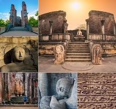
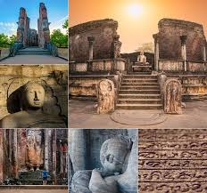

[9:23 pm, 02/10/2022] PODDA: Vijayabahu I (1055–1110), recaptured the whole Island and established Polonnaruwa as the new capital. King Vijayabahu married a second queen from the Kalinga (Orissa) Royal Family, and had a son, Vikramabâhu I, and a daughter, Ratnavali. His sister, Mitta, married a Pandya Prince who had three sons. His eldest son, Manabharana, married Ratnavali. Their son was Parākramabāhu I (1153–1186) Grandson of Vijayabahu I, Prince of Sinhalese-Pandyan-Kalinga descent, son of Manabharana and Vijayabahu's sister, Mitta. He was a very powerful king who was noted for his engineering,[5] naval power, art, culture, Sinhala inscriptions, and even a Tamil edict in Uruthota (Kayts). The Chulavamsa was written by Dharmakirthi, updating the Mahavamsa to include Parakramabahu. [9:26 pm, 02/10/2022] PODDA: The second oldest of all Sri Lanka's kingdoms, Polonnaruwa was first established as a military post by the Sinhalese kingdom.[1] It was renamed Jananathamangalam by the Chola dynasty after their successful invasion of the country's then capital, Anuradhapura, in the 10th century. The Ancient City of Polonnaruwa has been declared a World Heritage Site.[2] Modern Polonnaruwa is undergoing a major development project known as the "Awakening of Polonnaruwa," championed by former President Maithripala Sirisena. It envisions the development of all sectors in Polonnaruwa including roads, electricity, agriculture, education, health and environment.[3]
list of some kings in Polonnaruwa 
